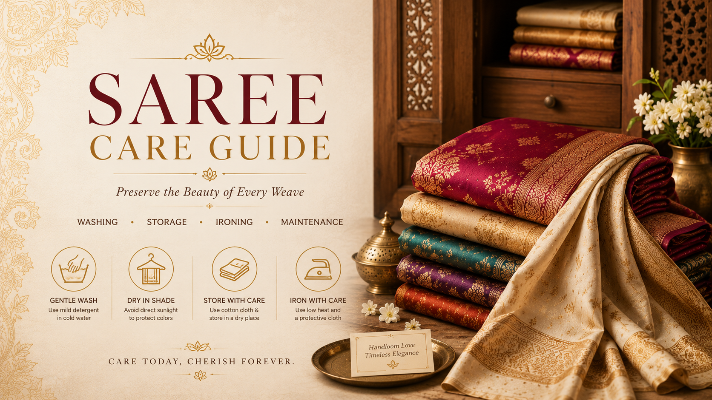

A handwoven saree deserves gentle care. Learn how to wash, store, fold, iron and protect silk, cotton, zari and designer sarees so they remain beautiful for years.

Always dry clean pure silk sarees. Store them in muslin cloth and avoid direct sunlight.
Hand wash separately with mild detergent and dry in shade to protect color brightness.
Do not spray perfume directly. Keep zari folds protected from moisture and heat.
• Always dry clean pure silk sarees.
• Store in a cool, dry place.
• Avoid direct sunlight for long periods.
• Refold periodically to prevent permanent creases.
• Use muslin cloth covers for storage.
• Hand wash separately using mild detergent.
• Avoid harsh bleach products.
• Dry naturally in shade.
• Iron while slightly damp for best results.
Change folds every few months.
Allows fabric to breathe naturally.
Store away from humidity and dampness.
We recommend professional dry cleaning.
Every 3–6 months is ideal.
Use low heat and place a cloth between the iron and fabric.